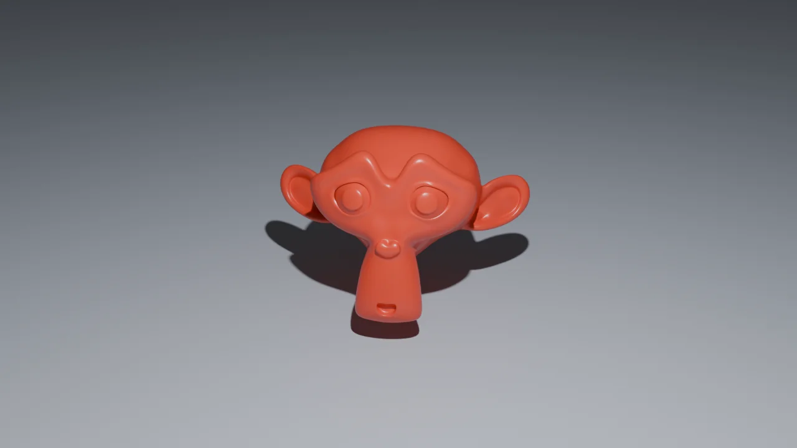
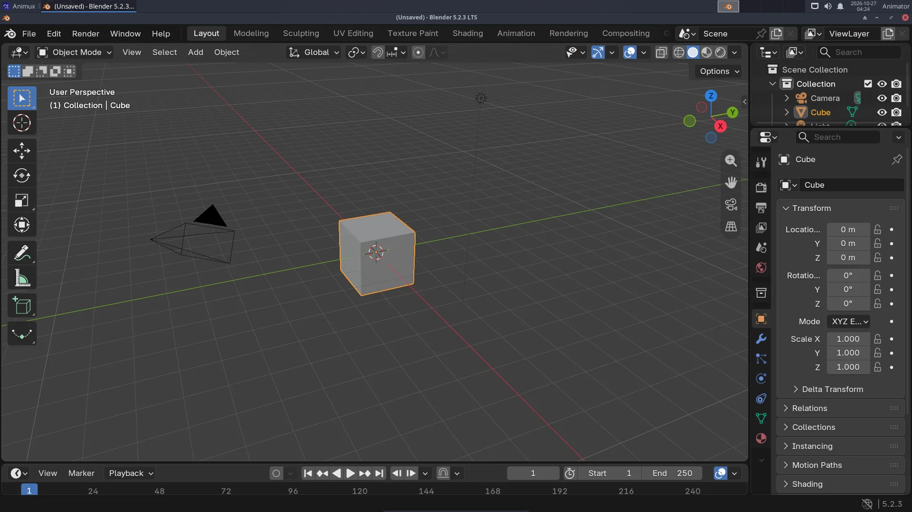
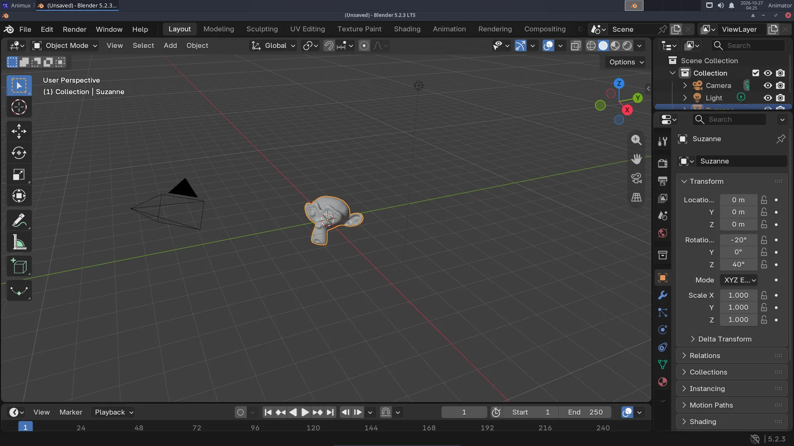
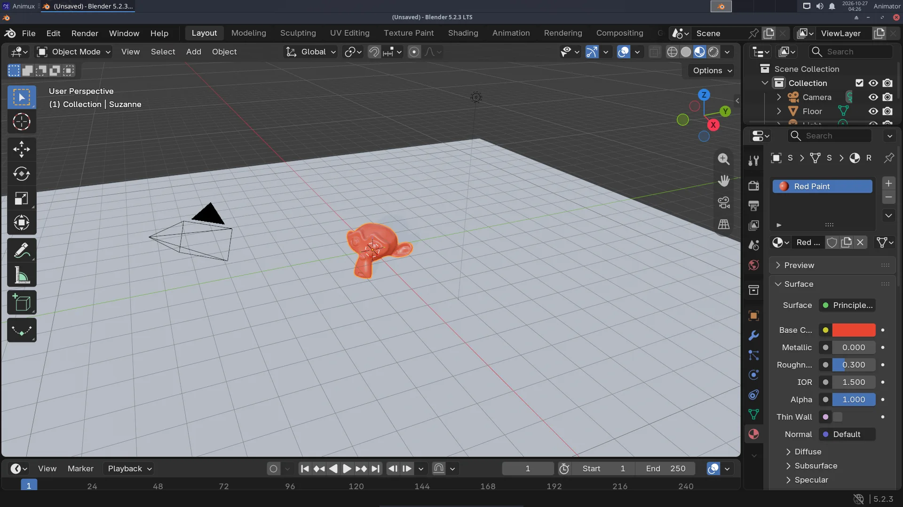
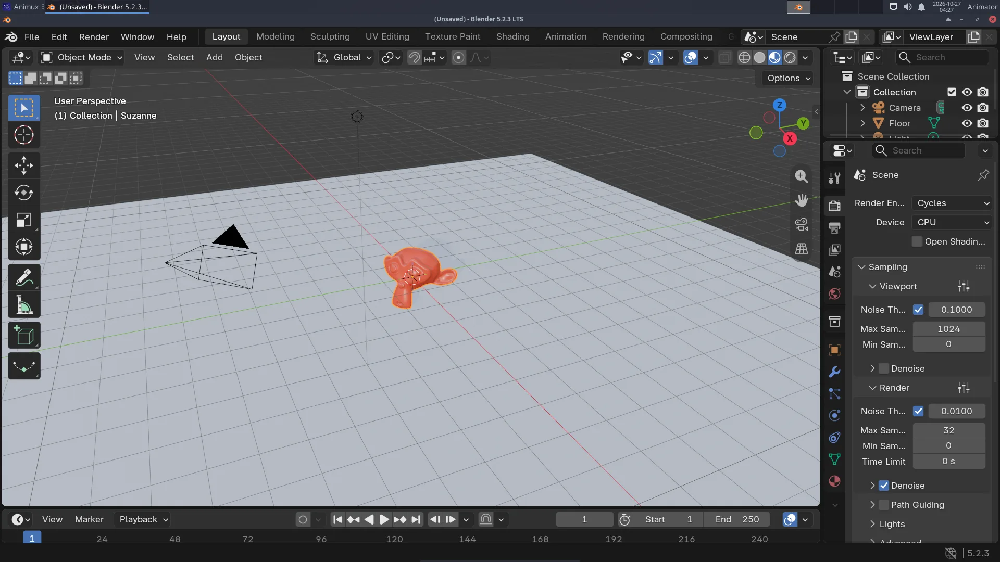
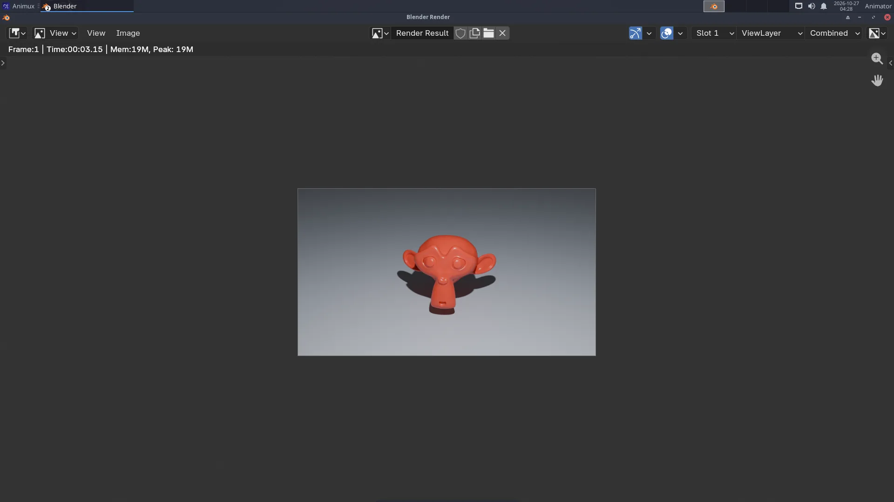

At the end you will have this picture, made by you:


You will learn the basics every 3D program shares: objects, the viewport, materials, lights, the camera and rendering.
The finished file
If you get stuck, download first-render.blend and open it in Blender (File → Open) to compare.
1. Start Blender#
Animux → 3D Animation → Modellers → Blender. Click outside the welcome screen to close it. You see the default scene: a cube, a camera (the pyramid shape) and a light (the dotted circle).


Try moving the view (this does not change the scene):
| Do | Mouse |
|---|---|
| Orbit around | hold the middle mouse button (the wheel) and move |
| Pan | Shift + middle mouse button |
| Zoom | turn the wheel |
No middle button (laptop)? Use the small coloured axes at the top right of the viewport: drag them to orbit, and use the hand and magnifier icons below them.
2. Replace the cube with a monkey#
- Click the cube to select it (it gets an orange outline).
- Press X and choose Delete (the mouse must be over the 3D view).
- In the viewport's header click Add → Mesh → Monkey. Suzanne appears where the cube was.
- Make her smooth: right-click on her → Shade Smooth.
- Make her rounder: press Ctrl+2. This adds a Subdivision Surface modifier (you can see it in the Modifiers tab, the blue wrench).


3. Add a floor#
- Add → Mesh → Plane.
- Make it bigger: press S, type
15, press Enter. - Move it down under Suzanne: press G, then Z, type
-1, press Enter.
The keys G (grab), R (rotate) and S (scale), followed by X, Y or Z and a number, are the fastest way to place things.
4. Paint it red#
- Click Suzanne again to select her.
- In the Properties editor (right side), click the Material tab, the red-and-grey sphere at the bottom of the tab column.
- Click New. A material called Material with a Principled BSDF is created.
- Click the white bar next to Base Color and choose a red.
- Set Roughness to
0.3for a shiny paint (0 = mirror, 1 = matt). - To see colours in the viewport, switch the shading to Material Preview: the third of the four sphere buttons at the top right of the viewport (or press Z → Material Preview).


Give the floor a grey-blue material the same way (select the plane, New, pick a colour, Roughness 0.6).
5. Light and camera#
- Light: click the light in the Outliner (top right list). In the Object Data tab (the green bulb) set Power to
2500 W. - Camera: press Numpad 0 to look through the camera (or View → Cameras → Active Camera). The scene is already framed. To change the view: View → Navigation → Walk/Fly or, easier, move the view where you like and press Ctrl+Alt+Numpad 0 to move the camera there.
6. Render settings#
- Click the Render tab in Properties (the camera-back icon, second from the top).
- Render Engine: Cycles. Device: CPU (always works).
- Under Sampling → Render, set Max Samples to
32and keep Denoise ticked. More samples = less noise but slower.


- In the Output tab (the printer icon), check Resolution:
1280×720,100 %.
7. Render!#
Press F12 (or Render → Render Image). A new window opens and the picture builds up tile by tile. In a VM or on an older computer it may take a minute.


8. Save the picture and the scene#
- In the render window: Image → Save As…, choose
Pictures, type the namefirst-render.png, click Save As Image. - In the main window: File → Save As… (Ctrl+Shift+S), make a folder
Projects, namefirst-render.blend.
Live session
In the live session, copy both files to a USB stick before you switch off. See The live session.
What next?#
- Change the colour, the light, or add a second object (Add → Mesh → UV Sphere), and render again.
- Make it move: A turntable animation.
- Learn more: Blender's manual (Help → Manual) and the free courses at https://studio.blender.org/training/.